4 RNA-Seq Data Quality Control
4.1 What is FASTQ file format
Next-generation sequencing and data analysis projects typically begin with the processing of sequence read data and their quality tags from the sequencer in FASTQ format. The FASTQ format is the most commonly used format in sequence analysis and is generated by a sequencer. The FASTQ file contains the sequence data from the clusters that pass the filter of a flow cell. Many analysis tools require this format because it contains much more information than FASTA. In this workshop, we will mainly explain the FASTQ file format, which comes from the Illumina sequencer.
The FASTQ format is similar to the fasta format, but differs in syntax and in the integration of quality values. Each sequence requires at least 4 lines:

A sequence identifier with information about the sequencing run and the cluster. The exact contents of this line vary by based on the BCL to FASTQ conversion software used.
The sequence (the base calls; A, C, T, G and N).
A separator, which is simply a plus (+) sign.
The base call quality scores. These are Phred +33 encoded, using ASCII characters to represent the numerical quality scores.
The FastQ sequence descriptor generally follows a specific format that includes all information about the sequencer and its position on the flow cell. The sequence descriptor also follows a specific format and contains information about the sample information.
FASTQ sequence descriptor, particulary in Illumina sequence reads look like:
@HWUSI-EAS100R:6:73:941:1973#0/1where
| HWUSI-EAS100R | The unique instrument name |
| 6 | Flowcell lane |
| 73 | Tile number within the flowcell lane |
| 941 | ‘x’-coordinate of the cluster within the tile |
| 1973 | ‘y’-coordinate of the cluster within the tile |
| #0 | Index number for a multiplexed sample (0 for no indexing) |
| /1 | The member of a pair, /1 or /2 (paired-end or mate-pair reads only) |
As mentioned earlier, line 4 contains the quality score of the nucleotide at the same position. The quality scores are represented by the code ASCII, which indicates how confident of the correctly called base is.
We can calculate the quality score of a base,if P is the error probability, then:
\[ \text{Q} = \text{-10}log_{10}\left( P \right) \]
The following figure shows the representative ASCII code for the score value. Base quality scoring for analysis is important when identifying types of genomic variation such as SNPs, but it is also an indicator of the overall quality of the sequencing as well.

4.1.1 What software use FASTQ
To date, Almost NGS analysis software requires FASTQ format. For example:
QC such as fastQC used FASTQ to determine how good of the sequence read library, generate an informative report, and also determining the presence of adapter sequences which can also be trimmed by some integrated QC tools such as FASTP.
Aligners such as bowtie2, BWA, STAR, and so on, use reads, and quality sometimes, to align to the reference sequence. The mapping information can be further used for quantifying expression, constructing sequence assembly, and variant calling.
De novo assembly tools, for example Trinity, Spades, Velvet, etc., also use FASTQ to construct contig library and scaffolding. Some de novo assembler tools not only use FASTQ to contruct draft assembly but also used in the polishing process to refine assembly, such as Flye, Unicycler, Canu, etc.
4.2 Quality assessment using FastQC
FastQC is designed for quality control of raw sequence data from high-throughput sequencing technology. It provides a modular set of analyses that you can use to get a quick overview of the quantity and quality of your data, and to help you decide on the raw data whether you should perform adapter or low-quality read trimming or whether you can perform further analyses. For sequence reads that require adapter trimming before further analysis, we recommended to assessing the quality both before and after trimming.
Most sequencers will generate a QC report as part of their analysis pipeline, but this is usually only focused on identifying problems which were generated by the sequencer itself. FastQC aims to provide a QC report which can spot problems which originate either in the sequencer or in the starting library material.
The following will perform on you user account by activating your working environment at first.
conda activate qcThen, create a directory for QC result before adapter trimming
mkdir 02_QC/fastQC_before_trimRun FastQC all file at once. Here, we’ll use a wildcard *.fastq to select all FASTQ files in 01_Rawdata directory. We also specify number of CPU threads in --threads and QC output files in 02_QC/fastQC_before_trim using --outdir argument.
fastqc --outdir 02_QC/fastQC_before_trim \
--threads 2 \
/opt/Cpa_RNASeq/01_Rawdata/*.fastqEstimated time: ~10min
4.3 Interpreting FastQC results
FastQC also provided excellent explanation of each analysis step in their documentation. So we encouraged you to learn more at their web page along with the documentation.
The analysis in FastQC is performed by a series of analysis modules. The left hand side of the main interactive display or the top of the HTML report show a summary of the modules which were run, and a quick evaluation of whether the results of the module seem entirely normal (green tick), slightly abnormal (orange triangle) or very unusual (red cross).
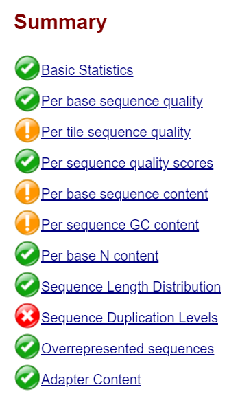
4.3.1 Basic statistics
The Basic Statistics module generates some simple composition statistics for the file analysed.
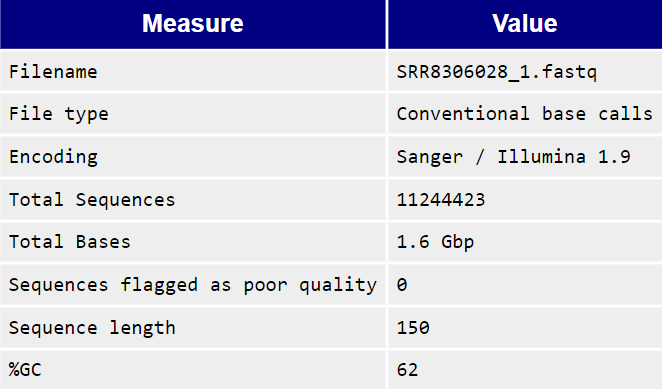
Filename: The original filename of the file which was analysed
File type: Says whether the file appeared to contain actual base calls or colorspace data which had to be converted to base calls
Encoding: Says which ASCII encoding of quality values was found in this file.
Total Sequences: A count of the total number of sequences processed. There are two values reported, actual and estimated. At the moment these will always be the same. In the future it may be possible to analyse just a subset of sequences and estimate the total number, to speed up the analysis, but since we have found that problematic sequences are not evenly distributed through a file we have disabled this for now.
Sequence Length: Provides the length of the shortest and longest sequence in the set. If all sequences are the same length only one value is reported. %GC: The overall %GC of all bases in all sequences
4.3.2 Per Base Sequence Quality
The Per base sequence quality plot shows an overview of the range of quality values across all bases at each position in the FastQ file.
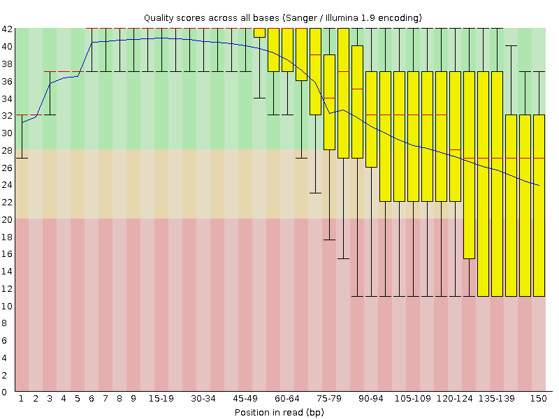
The higher the score, the better the base call, i.e., the box plots fall into the very good quality area (green background), the mediocre quality area (orange background), and the poor quality area (red background). The following figures show a comparison of the good and poor quality results of Illumina sequencing technology.
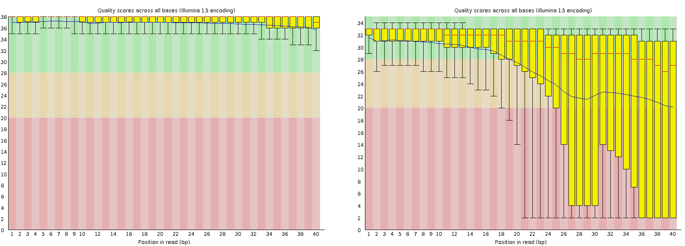
4.3.3 Per tile sequence quality
This plot is specific to Illumina sequencing libraries and shows colour shading of quality score by position on the flow cell. The colours are on a scale from cold to hot, with cold colours representing positions where the quality was at or above average for that base in the run, and hotter colours indicating that a tile had worse qualities than other tiles for that base. In the example below, you can see that certain tiles have consistently poor quality. A good chart should be blue throughout.
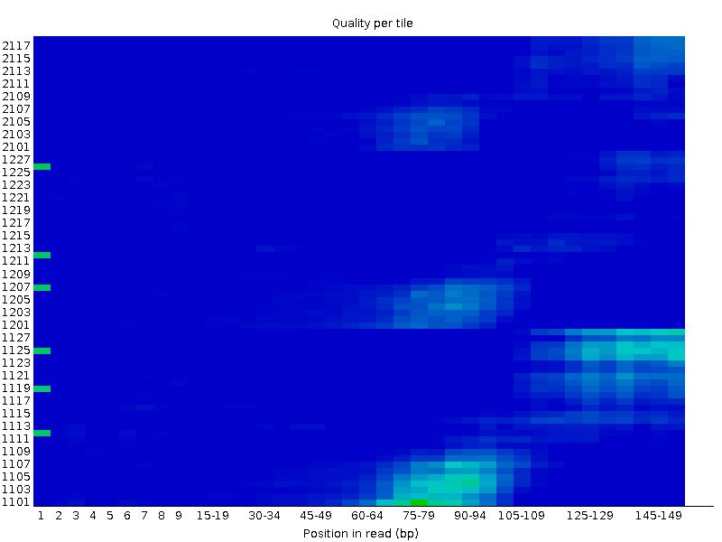
4.3.4 Per Sequence Quality Scores
The per sequence quality score report allows you to see if a subset of your sequences have universally low quality values. It is often the case that a subset of sequences will have universally poor quality, often because they are poorly imaged (on the edge of the field of view etc), however these should represent only a small percentage of the total sequences.
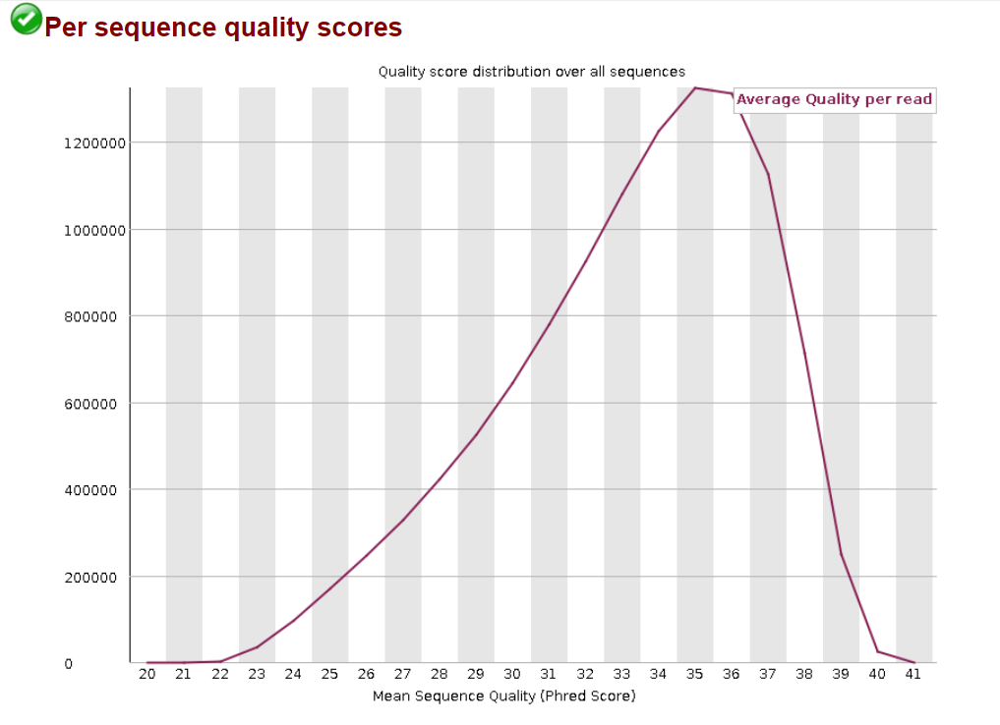
4.3.5 Per Base Sequence Content
Per Base Sequence Content plots out the proportion of each base position in a file for which each of the four normal DNA bases has been called. The plot shows the quality of nucleotide A T C and G separately into 4 lines.
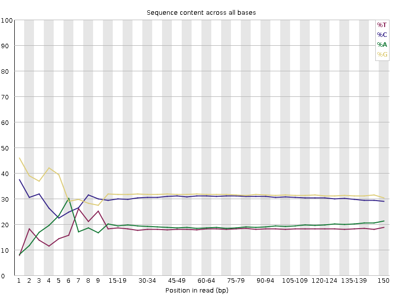
Usually ambiguous base values are found at the beginning of the read. Libraries made with random hexamer primers, with almost all RNA-Seq libraries using them, and those that were fragmented libraries. This bias does not affect an absolute sequence, but provides enrichment of a number of different K-mers at the 5’ end of the reads. While this is a true technical bias, it cannot be corrected by trimming and does not appear to affect downstream analysis in most cases. However, a warning or error is generated in this module. This module issues a warning if the difference between A and T, or G and C is greater than 10% in any position.
4.3.6 Per Sequence GC Content
This module measures the GC content over the entire length of each sequence in a file and compares it to a normal distribution of GC content. Normally, one would expect an approximately normal distribution of GC content, where the central peak corresponds to the total GC content of the underlying genome of interest.
The skewness of the distribution may indicate some unusual events such as contamination or systematic bias in your sequencing library. However, the GC content signature of different organisms may depend on their nature.
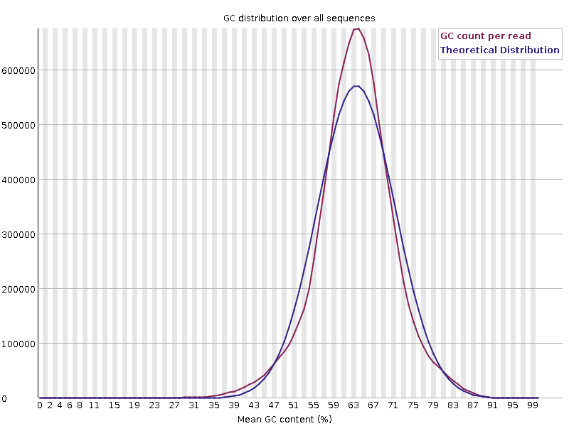
4.3.7 Per base N content
This module represents the percentage of base calls at each position for which an N was called. The ‘N’ base is found when the sequencer is not able to make a confident base call, then it will normally substitute an N.

4.3.8 Sequence Length Distribution
This module generates a histogram of distribution of sequence reads in the file which was analyzed.
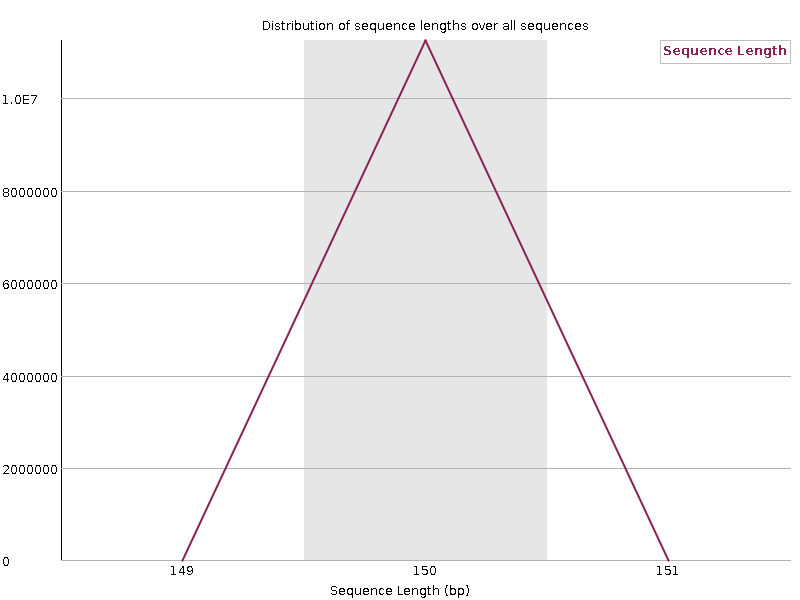
4.3.9 Sequence Duplication Levels
This module counts the degree of duplication for every sequence in a library and creates a plot showing the relative number of sequences with different degrees of duplication. A low level of duplication may indicate a very high level of coverage of the target sequence, but a high level of duplication is more likely to indicate some kind of enrichment bias (eg PCR over amplification).
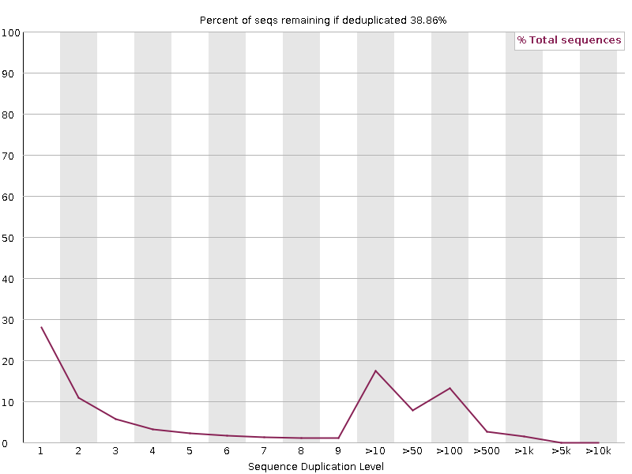
4.3.10 Overrepresented sequences
This module lists all sequences that make up more than 0.1% of the first 100,000 sequences examined. For each overrepresented sequence, the program searches for matches in a database of common impurities and reports the best match found. However, finding a hit doesn’t mean that this is the source of the contamination, but may point you in the right direction.
4.3.11 Adapter Content
This plot shows the cumulative percentage of adapter sequences used for sequencing this library at each position. Most adapter sequences found in Illumina RNA-Seq libraries are Illumina Universal Adapters. This module issues a warning if a sequence is present in more than 5% of all reads. This module issues a warning if a sequence is present in more than 10% of all reads. If the adapter sequence is present in more than 1% of the sequence library, adapter trimming is considered.
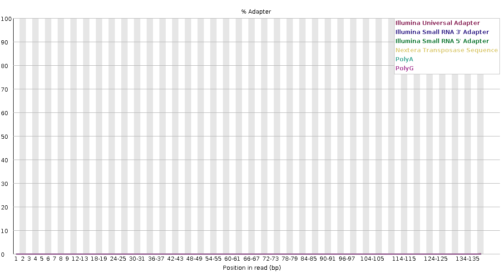
To further combine all the QC results into a single interactive HTML file, we’d suggested to use multiqc software to combine it.
conda activate qcThen, run multiqc
multiqc --filename QCreport_before_trim \
--outdir 02_QC/ \
--dirs 02_QC/fastQC_before_trim/Estimated time: > 1 min
Output files:
- QCreport_before_trim_data
├── multiqc_citations.txt
├── multiqc_data.json
├── multiqc_fastqc.txt
├── multiqc_general_stats.txt
├── multiqc.log
└── multiqc_sources.txt
- QCreport_before_trim.html4.4 Adapter Trimming with Cutadapt
Cutadapt is a tool to remove sequencing adapters, primers, poly-A tails and other types of unwanted sequence from your high-throughput sequencing reads. Cutadapt supports both FASTQ and FASTA file format for trimming.
Several types of sequencing adapters have been used nowaday. We have to know which adapter found in our sequencing library. Fortunately, Illumina provide a manual of Illumina Adapter Sequences that used in different types of sequencing. As mentioned, most of RNA-Seq library sequenced by Illumina used Illumina TruSeq Single Indexes, which is AGATCGGAAGAGCACACGTCTGAACTCCAGTCA and AGATCGGAAGAGCGTCGTGTAGGGAAAGAGTGT flanked at the 5’ end of forward reads and 3’ end of reverse reads, respectively.
Fortunately, the dataset that will be used is free of apadter sequences examined from the adapter content from FastQC result. So this command will just show as a demo for your future project.
An example command of Cutadapt as follow.
cutadapt --cores 2 \
-u 10 -U 10 \
-a AGATCGGAAGAGCACACGTCTGAACTCCAGTCA \
-A AGATCGGAAGAGCGTCGTGTAGGGAAAGAGTGT \
-o <output_forward.fastq> \
-p <output_reverse.fastq> \
<input_forward.fastq> <input_reverse.fastq>According to the command, we specify number of CPU threads in --cores. We remove 10 bases directly from each end of read, -u for forward and -U for reverse reads. Then we specify the adapter sequences as mentioned above in a and A. And the paths for forward and reverse reads output files in -o and -p, respectively.
4.5 Reference Sources
Quality Control of FASTQ files from Harvard Chan Bioinformatics Core (HBC) training (Accessed on 1 Mar 2023).
FastQC official website from Babraham Bioinformatics (Accessed on 1 Mar 2023).
FastQC Documentation from Babraham Bioinformatics (Accessed on 1 Mar 2023).
Cutadapt 4.2 Documentation (Accessed on 1 Mar 2023).
Illumina Adapter Sequences (Accessed on 1 Mar 2023).